MY CREATIVE WORKS
デザインと技術で創造するデジタル体験

LOGO DESIGN
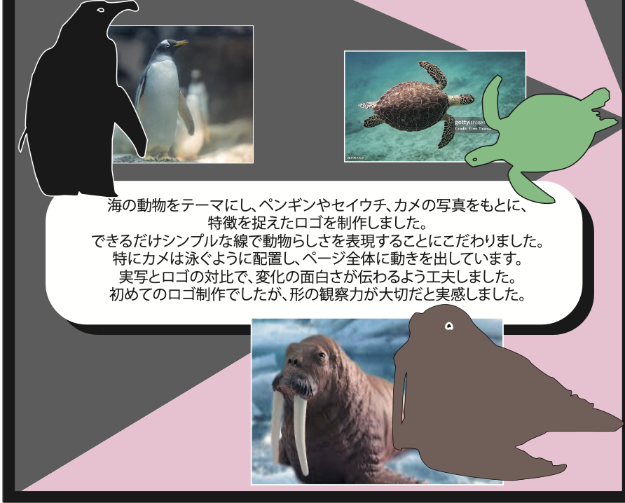
ANIMAL LOGO DESIGN
海の動物をテーマにしたシンプルなロゴ
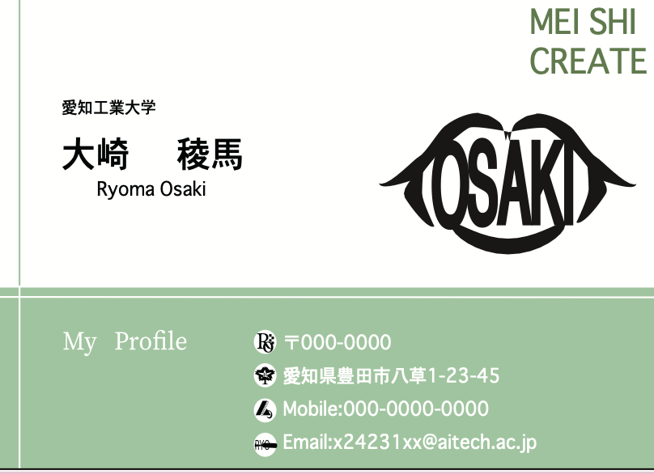
MY LOGO DESIGN
自分の名前をモチーフにしたロゴ
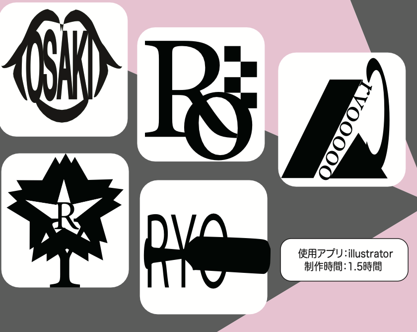
BUSINESS CARD DESIGN
自作ロゴを活かした名刺デザイン
POSTER & GRAPHIC DESIGN
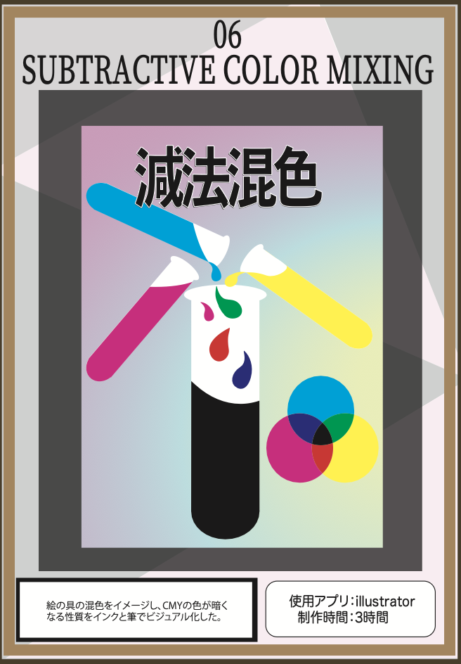
VISIBLE LIGHT POSTER
可視光線と波長の関係を図解
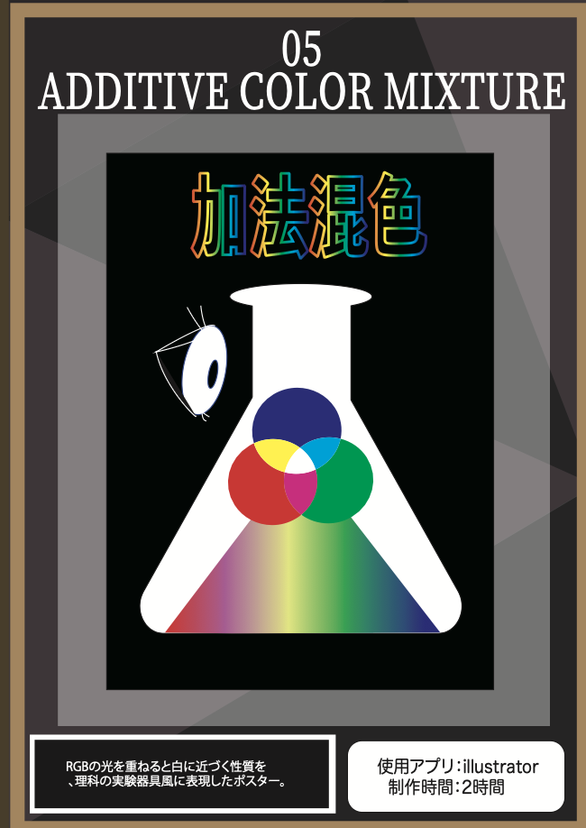
ADDITIVE COLOR MIXTURE
加法混色の科学ポスター
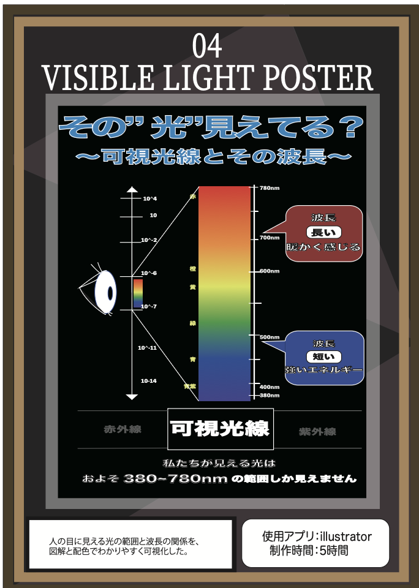
SUBTRACTIVE COLOR MIXING
減法混色をビジュアル化
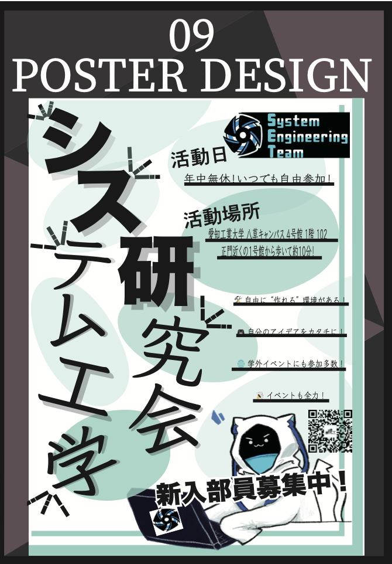
POSTER DESIGN
システム工学研究会ポスター
CG & VIDEO PRODUCTION
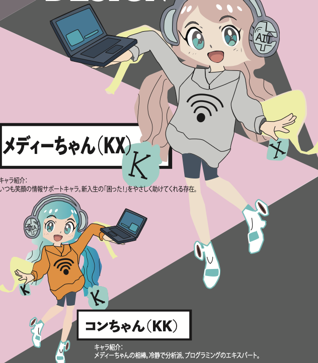
CHARACTER DESIGN
大学の学科マスコットキャラクター
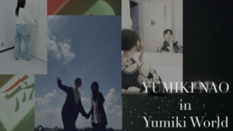
MUSIC VIDEO
オリジナル楽曲のミュージックビデオ
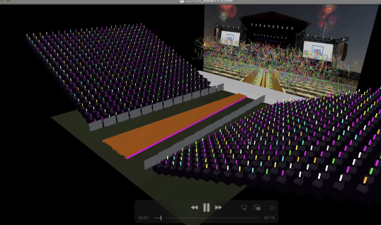
LIVE STAGE CG
仮想ライブステージの空間演出
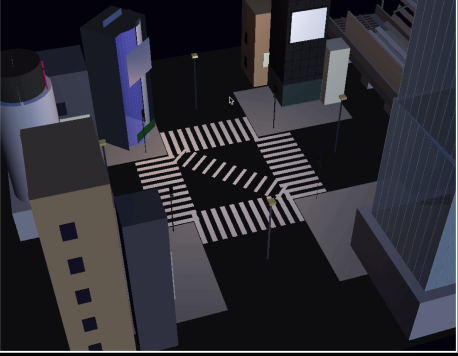
SHIBUYA CROSSING CG
リアルな街並みの再現と光の表現
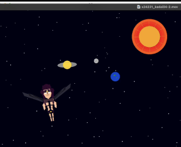
JOJO SCENE RECREATION
人気アニメシーンの3D再現
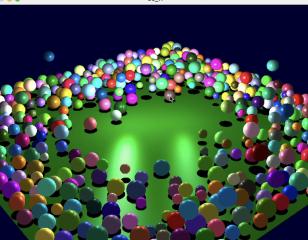
GLOSSY REFLECTION TEST
物理ベースのライティング実験
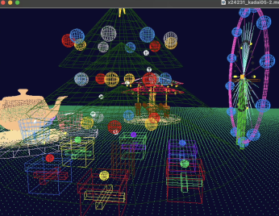
AMUSEMENT RIDE CG
動きとタイミングを合わせた表現
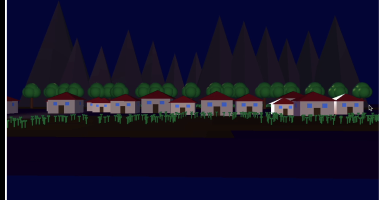
SUNRISE & REFLECTION
空と水面のグラデーション表現
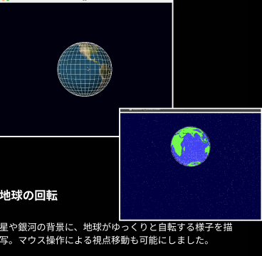
EARTH ROTATION CG
昼夜の移ろいを表現した地球
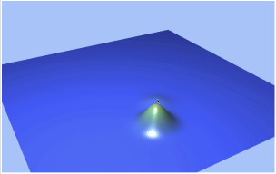
GROUND EXPANSION CG
プレイヤーの操作に連動する地面変化